The broth comes first
Beef bones go on every morning. The clear haejang-guk is gentle and not spicy; the spicy version is the same broth with our own chili paste stirred in.
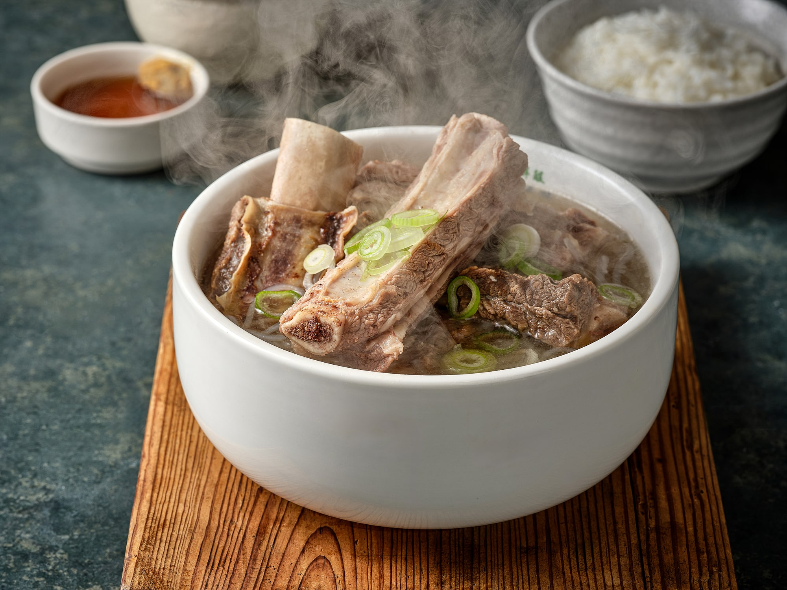
Inside Yangnyeongsi, Daegu’s 400-year-old herbal medicine alley, Cheongwoo Haejang serves clear beef broth simmered all day from brisket and shank — short rib soup, beef soup, cold noodles in summer. Less seasoning, deeper broth: breakfast, a meal with elders, a wholesome family lunch.
We cook in an alley that once dealt in medicine. Long-simmered broth over heavy seasoning, a table that leaves you settled rather than stuffed — our hope is that visitors to Daegu and the neighbourhood’s elders remember one honest bowl.
Beef bones go on every morning. The clear haejang-guk is gentle and not spicy; the spicy version is the same broth with our own chili paste stirred in.
The clear short rib soup and the boiled beef shank carry no chili at all. These are what families order for birthdays and holidays.
Yangnyeongsi Herbal Medicine Museum, Seomun Market, Dongseong-ro and the Modern History Street are all within walking distance. Convenient for hotel guests nearby.
We take group bookings for up to 40 people. Lunch gets busy, so please call ahead for larger parties.
Five minutes on foot from Banwoldang Station (Metro Lines 1 & 2), beside the Yangnyeongsi Herbal Medicine Museum.
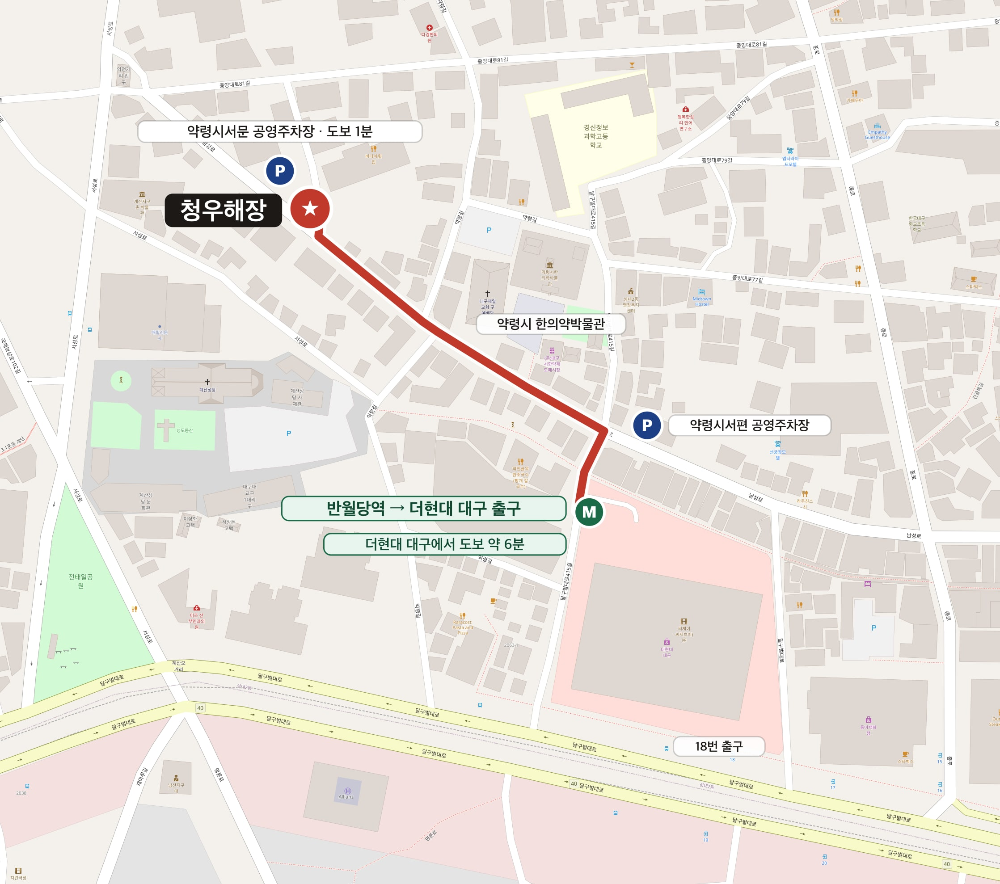
4 min on foot · P Public parking (1 min)
Namseong-ro is not just a street. It is the main lane of Yangnyeongsi, Daegu’s historic herbal medicine market, and it sits on the route of the Modern History Street walking tour.
Daegu’s Yangnyeongsi began in the late Joseon period as a seasonal market for medicinal herbs, held near the guesthouse of the Gyeongsang provincial office. What was once a month-long fair each spring and autumn is now a permanent market along Namseong-ro — the street everyone calls Yakjeon-golmok, the herbal medicine alley. Walk it today and the smell of dried roots still drifts out of the shops. We are inside that alley, right beside the Yangnyeongsi Herbal Medicine Museum.
Course 2 of Jung-gu’s “Journey into the Modern Era” walking tour is the Modern Culture Alley. Named a Star of Korean Tourism in 2012 and listed repeatedly among Korea’s 100 best destinations, it is the route that turned alley-walking into a national pastime. It starts at the missionary houses on Cheongna Hill, comes down the March First Movement stairs, passes Gyesan Cathedral and the houses of the poet Lee Sang-hwa and the patriot Seo Sang-don — and then runs straight into our alley.
The full walk takes two to three hours. Sitting down to a hot bowl at the halfway point makes the second half far easier. Early visitors tend to order the clear haejang-guk; those who have already been walking usually want the short rib soup.
Daegu on a 1930 survey map — Yangnyeongsi grew along the road south of the old town wall, today’s Namseong-ro. Herbs changed hands here for close to 400 years; now we simmer broth on the same lane.
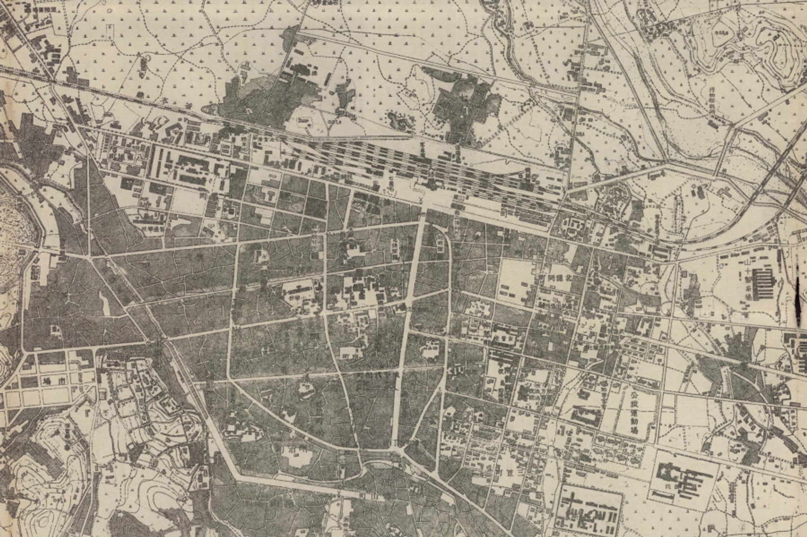
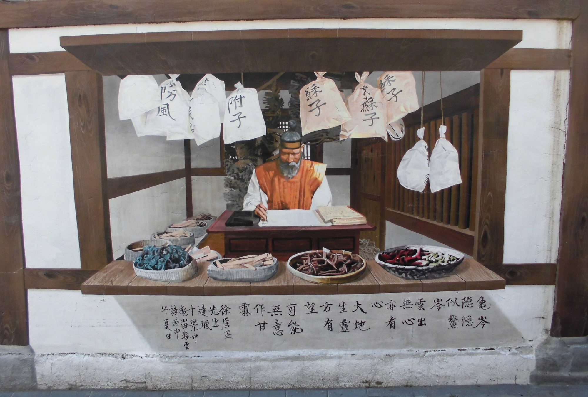
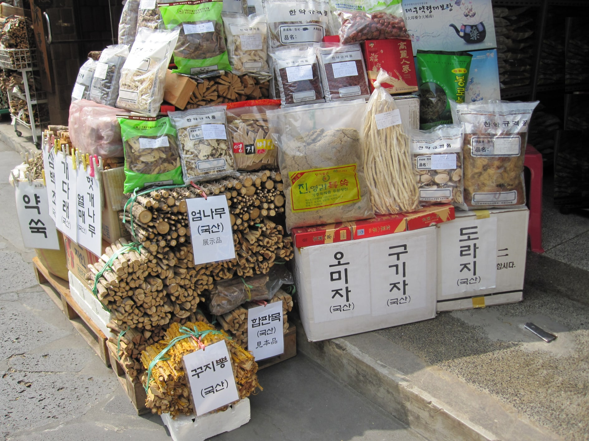
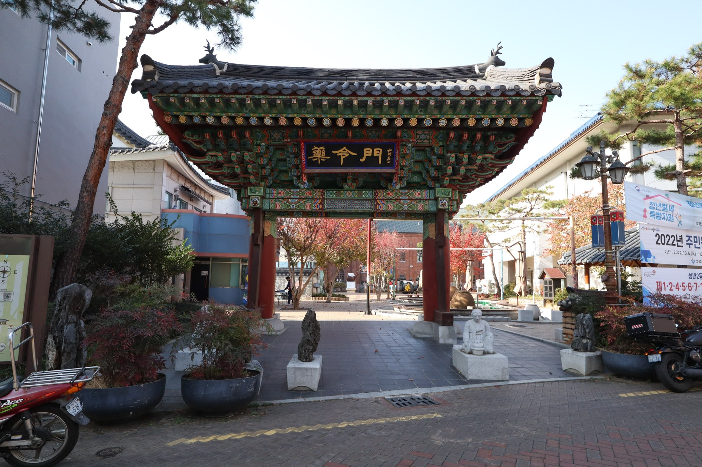
Refitted in 2024 — full-height windows, oak tables, around 40 seats.
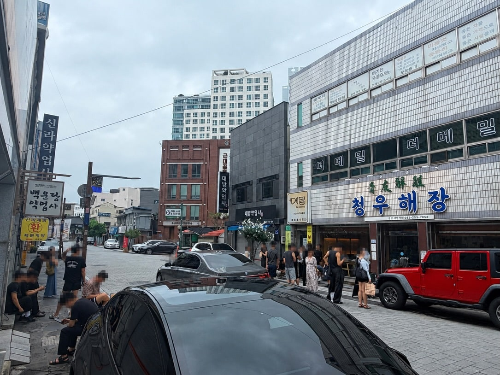
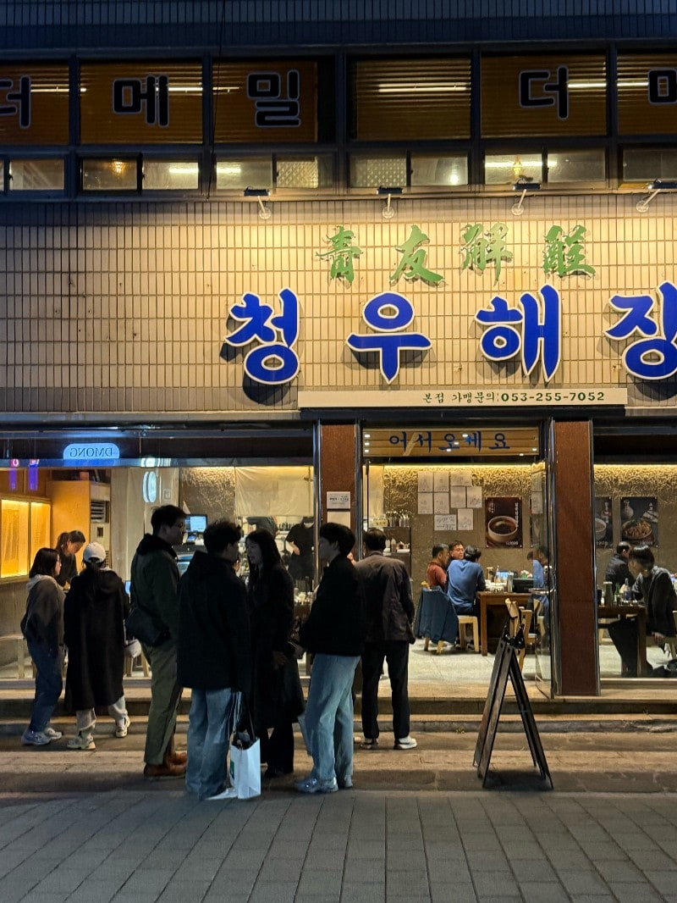

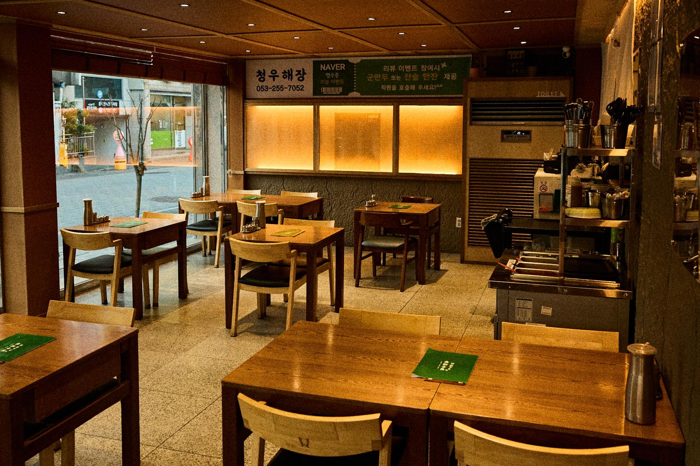


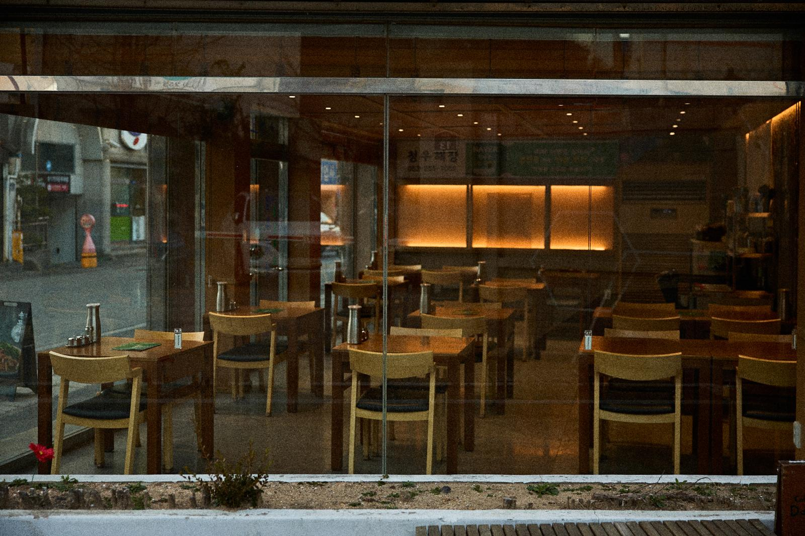
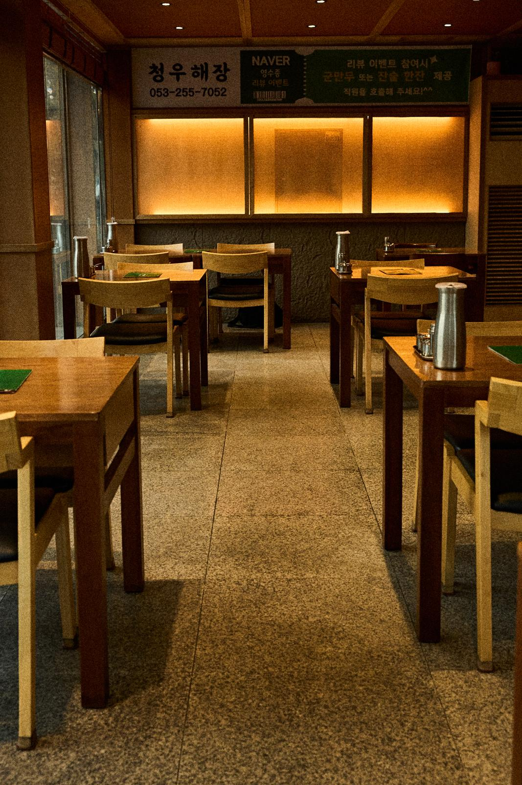
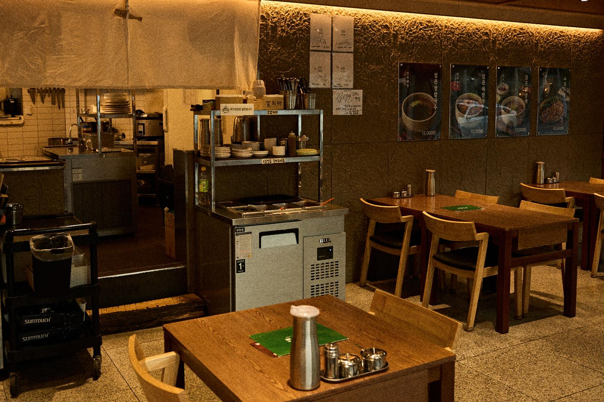

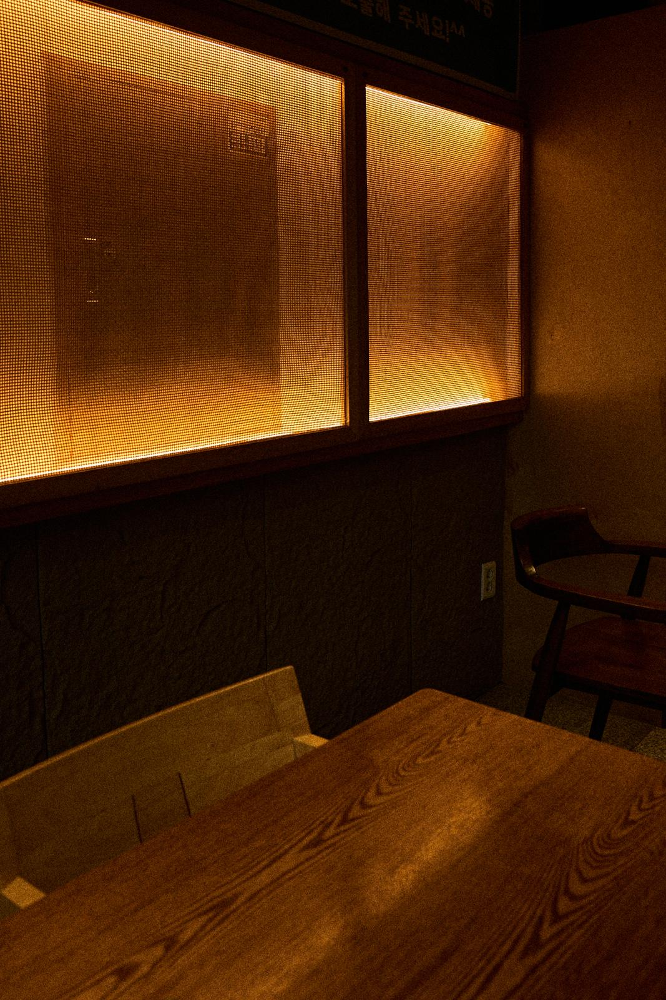
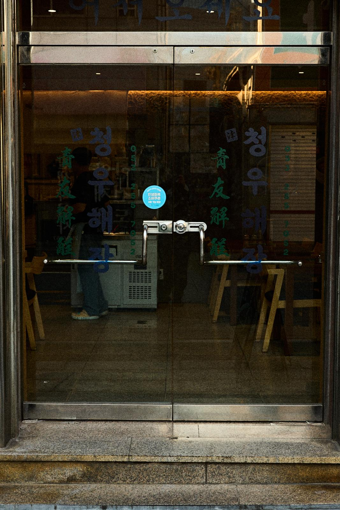
“Top marks for taste, service and cleanliness. The boiled beef shank is genuinely delicious.”
“Tastes like galbitang from a decades-old institution. Three big ribs in the bowl — great for kids too.”
“The broth is deeply restorative, and the meat is so tender — something for every age.”
“I had no idea braised oxtail could taste this good — the somyeon noodles are the kick, and the fried rice finish made my day.”
Five minutes on foot from Banwoldang Station (Metro Lines 1 & 2), beside the Yangnyeongsi Herbal Medicine Museum.
11 Namseong-ro, Jung-gu, Daegu, South Korea
대구광역시 중구 남성로 11
We have no private car park, but the Yangnyeongsi West Gate public car park is a 1-minute walk away. Tap a name below for directions.
Daily 11:00 – 22:00
Break 15:00–17:00 · Last order 21:00
Bookings are taken by phone. Groups up to 40, takeaway available. Expect a short wait at lunch (12:00–13:30). Staff speak limited English — showing this page works well.
053-255-7052The phone is answered during opening hours (11:00–22:00 KST).
Daegu’s signature dishes are jjim-galbi (spicy braised short ribs), ttaro-gukbap (Daegu-style beef soup) and Pyeongyang-style naengmyeon in summer — all on our menu, a 5-minute walk from Banwoldang Station in the Yangnyeongsi herbal alley.
We sit inside Yangnyeongsi Herbal Medicine Alley, one of Daegu’s best-known tourist attractions. Within a 15-minute walk you can visit the Modern History Alley (Cheongna Hill, Gyesan Cathedral) and Seomun Market — easy places to visit on a half-day Daegu travel itinerary, with our table as the lunch stop.
Yes, by phone. We accept group bookings for up to 40 people. Call +82 53-255-7052.
No private car park, but the Yangnyeongsi West Gate public car park is a 1-minute walk away, with 2–3 more within 2–4 minutes. See “Getting here” for directions links.
Yes — 15:00 to 17:00. We close at 22:00.
Yes. The clear haejang-guk, the short rib soup and the boiled beef shank contain no chili.
Weekday lunch (12:00–13:30) and weekends can be busy. Just after opening or early evening is quieter.
Yes. Call ahead and your order will be ready to collect.
This page carries the menu in English, Japanese and Chinese. Showing the screen to our staff works fine.
4 min on foot · P Public parking (1 min)